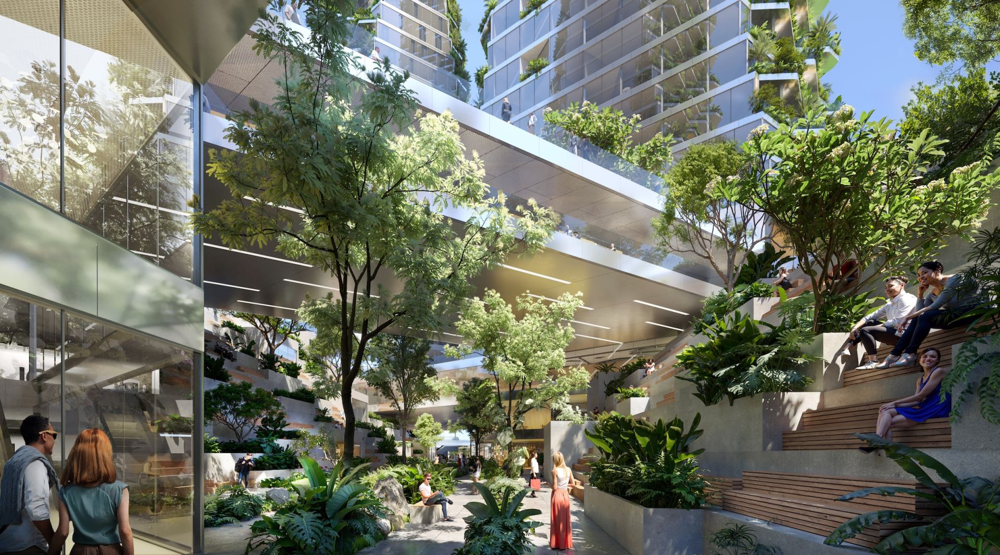
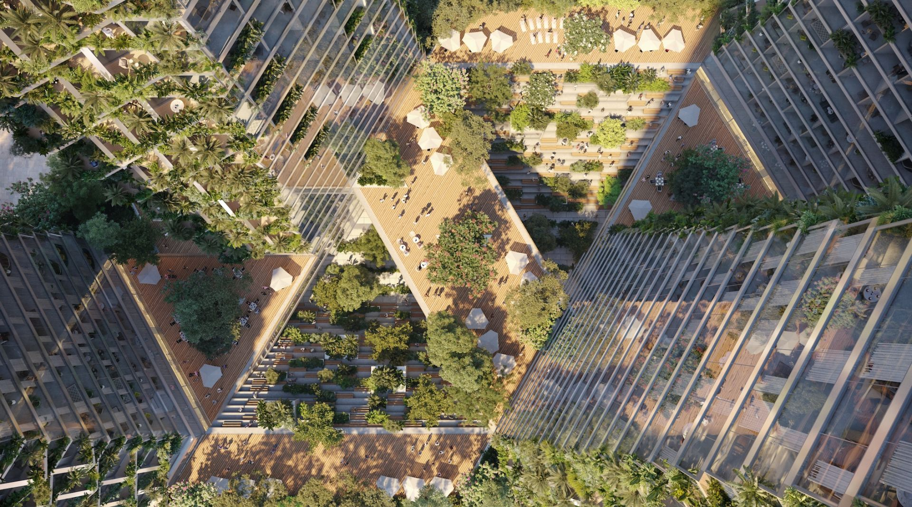
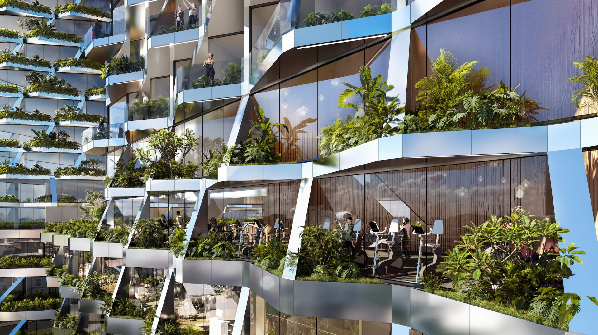
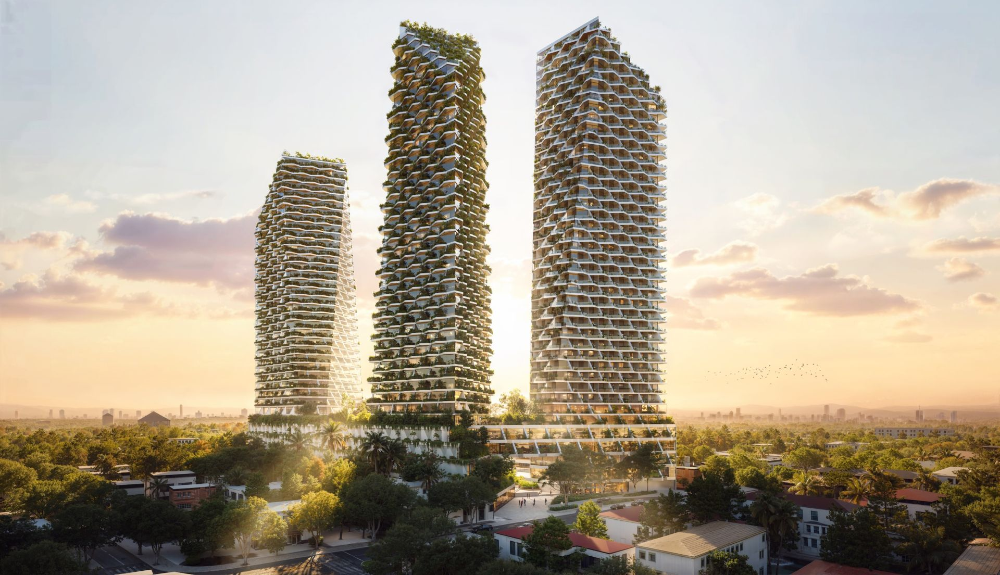
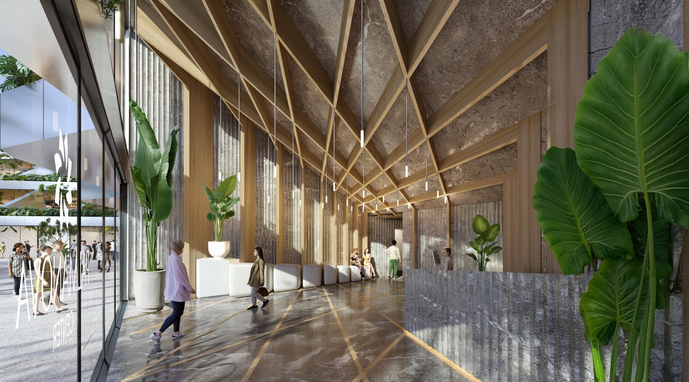
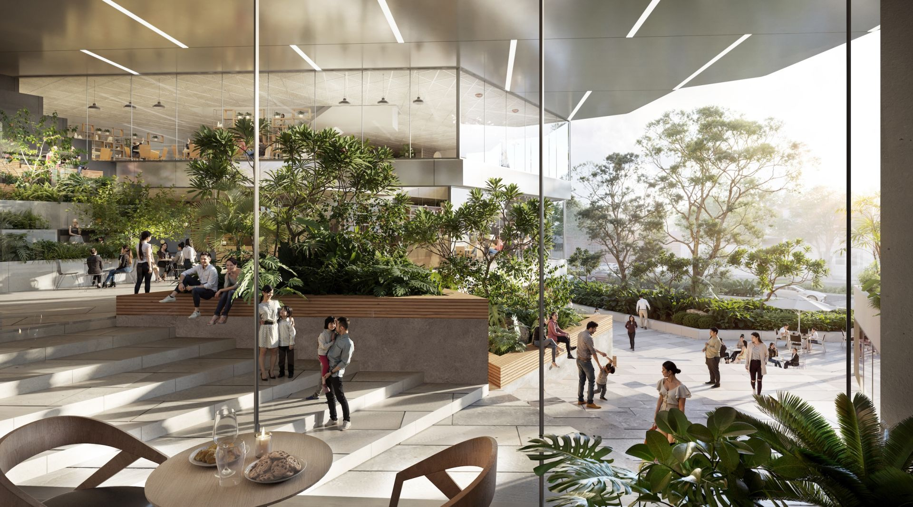
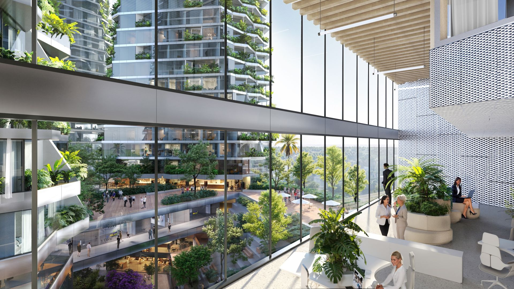
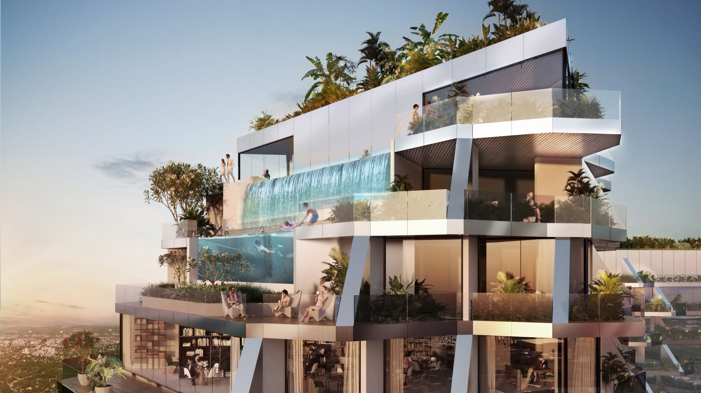
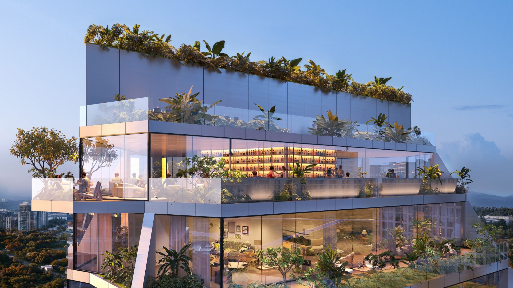
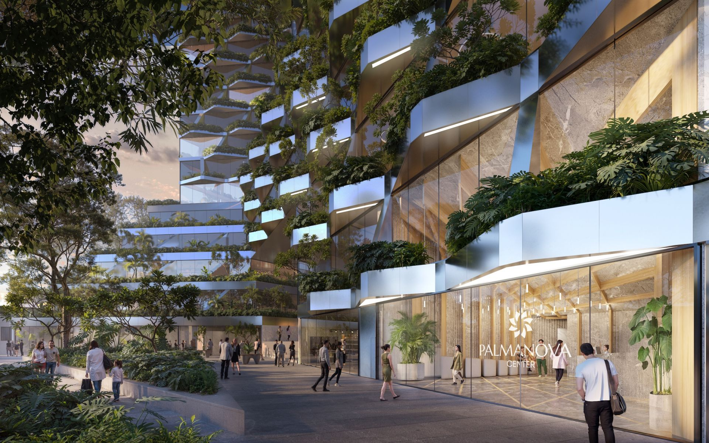

0m²
Gross floor area
Palmanova Center — Case Study
More than a building — a proposal for a new urban valley.
In a capital growing faster than its own map, Jasper Architects answers Asunción's expansion not with another isolated tower, but with a piece of city. Four sculptural high-rises are set upon a five-storey public plinth and split by an open pedestrian valley — a place where the street keeps climbing until it becomes sky.
The proposition is deliberately civic. Residential, office, and retail functions fuse; public and private overlap at the scale of the block. Between the towers runs a landscape of terraces, vegetation, bridges, and a linear park — a hybrid condition the studio describes as part mall, part promenade, entirely open to the public.
It is a single, forward-looking figure for the city: density, public life, and climate-responsive design resolved into one coherent gesture, and a new benchmark for large-scale development in Latin America.

The design introduces a single idea that organises everything: an urban valley. A public plinth and staggered towers connect through green, open space to form a cohesive whole — reshaping the relationship between buildings and the city, and offering a fresh typology for sustainable, community-driven growth.
Cocooned between the towers is a pedestrian valley of terraces, vegetation, bridges, and a linear park. A continuous route threads through the centre of the site, linking shops, cafés, a supermarket, and wellness areas — blurring the line between public and private at ground level.
The plinth is intersected by a sequence of terraces, shaded walkways, and gardens inspired by the region's cañadas — the natural ravines that shape local ecosystems.

Here, landscape is not decoration. Residential, commercial and office programs are woven like branches in a dense vertical forest — design that actively cultivates space: filtering air, cooling its surroundings, and reconnecting the city to nature.
Shaded balconies and verdant terraces act as vertical gardens, sheltering interiors from heat while creating habitats for local flora and fauna — turning the towers into biodiversity corridors in the sky. From the street to the highest terrace, green landscapes climb the structure, extending Asunción's urban canopy.
Building envelopes pair high-performance double glazing with aluminium composite panels that reflect 40% of solar radiation — but it is the living layers that define the project's character.

Each terrace is a thermal device and a garden at once: cooling interiors naturally, softening the building's profile against the skyline, and connecting nature through every level. Beyond the envelope, the development integrates water recycling, stormwater management, and renewable energy generation — its ecological benefits extending well past the walls.
The towers share one family language but differ in height and purpose. Their offset forms are oriented to capture daylight and prevailing breezes while preserving unobstructed views across Asunción — and, crucially, to let natural light fall all the way down into the valley below.
Two residential towers hold 200+ units, from compact one-bedrooms to expansive penthouses. Two office towers offer adaptable floor plates up to ~1,150 m². Rooftops become shared leisure: botanical gardens, infinity pools, panoramic platforms.

At 180 metres, among the city's highest structures — yet read at street level as a landscape, not a wall.
Massing & orientation
From the arrival hall to the highest terrace, the section is built to be lived in — and shared.

A timber lattice draws daylight deep into the lobby — the public realm announced the moment you step inside.

Interiors open onto planted courtyards; the boundary between room and landscape kept intentionally soft.

Adaptable plates give every tenant a view into the valley. Daylight and prevailing breezes are designed in — the workplace borrows the calm of the landscape it overlooks.

Botanical gardens, infinity pools and panoramic platforms occupy the highest reaches — leisure as the building's summit.

Shared amenity at altitude — a room in the canopy, planted to its edges and open to the horizon.
At the base, retail and public terraces fold into a continuous promenade. Bridges span planted areas to create elevated crossings while preserving open sightlines below — the ground floor remains, above all, a public place.

Geometry developed from analysis — basic volumes defined by code and site, then modified by the project's own parameters until they harmonise into something sculptural.
Study Asunción's growth along Primer Presidente and the need for density paired with genuine public life.
Adopt the cañadas — the region's ravine landscape — as the generator of the building's section.
Distribute programme across four towers, differentiated by use, height, and outlook.
Carve a public valley through the plinth so the city can pass through, not around, the block.
Offset the forms for daylight, breezes, views — and to let light reach the valley floor.
Make terraces, planting, and passive cooling the architecture's defining character.
Combine a high-performance envelope with LEED-targeted water, stormwater, and energy systems.
Push past the standard podium-and-tower to propose a new public figure for the capital.